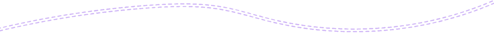
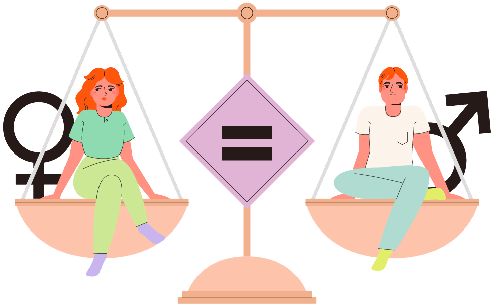
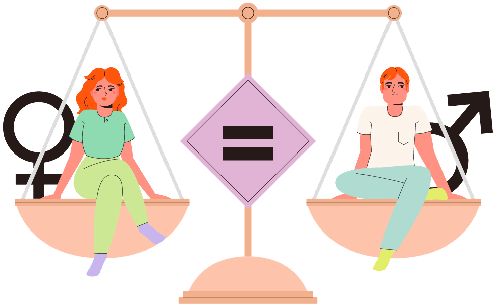

Datto es un sitio web, pensado para que lxs adolescentes accedan a información de interés, de manera confiable, segura y oportuna.

Métodos anticonceptivos

Prevencion ITS

Gestion menstrual
Consumo de sustancias
Este espacio acerca herramientas que posibilitan la reflexión y la intervención desde un enfoque de la complejidad, la multidimensionalidad y la interdisciplinariedad que la temática requiere.
Gestión de emociones
Comprender el mundo emocional es importante para poder gestionar el estado de ánimo, lo que ayuda a poder seguir construyendo nuestra identidad, relaciones interpersonales y también el proyecto de vida.
Cada un@ tiene una manera diferente de registrar emociones en el cuerpo, y es fundamental conocerlas e identificarlas a tiempo. Desde DATTO queremos escucharte y ayudarte.
Depresión
A veces podés sentirte bajoneada/o por un período largo de tiempo, con desánimo y pocas ganas.
Es importante que si te sentís así, puedas hablarlo con alguien con quien sientas confianza o consideres que puede escucharte.

Ansiedad
En la vida cotidiana existen emociones, sentimientos y estados de ánimo que se ven modificados permanentemente.
Muchas veces suceden de forma tal que no se identifican y entonces pueden afectarte mientras estás desarrollando tus actividades diarias.

DATTO es inclusiva
Todas las identidades y pronombres de género serán respetados, afirmados y celebrados en DATTO. Si buscás atención específica, nos aseguraremos de que recibas la atención que necesites.
Damos la bienvenida a nuestra comunidad trans y no binaria.
¿Cuándo un noviazgo es violento?
La violencia es peligrosa y deja consecuencias en la vida de las personas.

Igualdad de genero
La igualdad de género refiere a la igualdad de oportunidades entre niños, niñas, adolescentes, hombres, mujeres y diversidades, en relación al pleno goce de los derechos
 


Alimentación imagenes y estereotipos
Pensar en cuerpos y corporalidades, tiene siempre un componente cultural muy predominante, además del biológico que determina la fisonomía de cada persona.
Pensando en el componente cultural, creemos que es de vital trascendencia porque refiere a los modos de expresión que una sociedad tiene para comunicarse y que, además, se manifiestan simbólicamente en el lenguaje, en la moda musical, de indumentaria y también de los tipos de cuerpo “válidos”.
La nutrición en la adolescencia es un tema súper importante que muchas veces está mas vinculado a cómo nos queremos ver, que a cómo nos sentimos a partir del funcionamiento que permite la buena nutrición en el organismo.